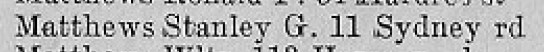
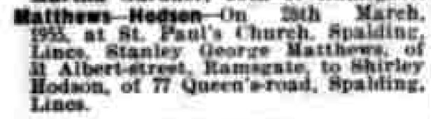
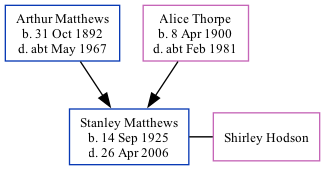

Stanley George Matthews 1925 - 2006
[ Home ] | [ Calendar ] | [ Surnames Index ] | [ Family History ]The son of Arthur Matthews (a mariner) and Alice Thorpe, Stanley Matthews, the third cousin once-removed on the father's side of Nigel Horne, was born in Ramsgate, Kent, England on Sep 14, 19251,2,3. He married Shirley Hodson on St Paul's Church, 61 Holbeach Road, Spalding, Lincolnshire, England on Mar 26, 19554.
Stanley spent all of his life in Kent, England. Throughout his life, he lived in several places around the county: at 1 Spring Villas in Ramsgate on Sep 29, 19391; at 31 Albert Street in Ramsgate in 1955; on 11 Sydney Road in Ramsgate in 19637, in 19655 and in 19748; and at 18 Vine Close in Ramsgate in 20066.
He died on Apr 26, 2006 in Ramsgate3.
Parents
- Arthur Albert was born on Oct 31, 1892
- Alice Ethel was born on Apr 8, 1900
Citations
- 1939 Register - Findmypast (was the son of the head of the household)
- England & Wales births 1837-2006 - Findmypast
- England & Wales deaths 1837-2007 - Findmypast
- England & Wales Marriages 1837-2005 - Findmypast
- 1965 Kelly's Thanet Directory
- UK, Electoral Registers, 2003-2010
- 1963 Kelly's Thanet Directory
- 1974 Kelly's Thanet Directory
Media
1965 Kelly's Thanet Directory

East Kent Times and Mail - 6 Apr 1955

1963 Kelly's Thanet Directory

1974 Kelly's Thanet Directory

England & Wales births 1837-2006 - BMD/B/1925/4/AZ/000806/096
1939 Register - TNA/R39/1766/1766J/024/22
England & Wales deaths 1837-2007 - BMD/D/2006/4/87221014
England & Wales marriages 1837-2005 - BMD/M/1955/1/AZ/001033/130
Family Tree
Generated by Ged2Site. Last updated on Jul 20, 2025